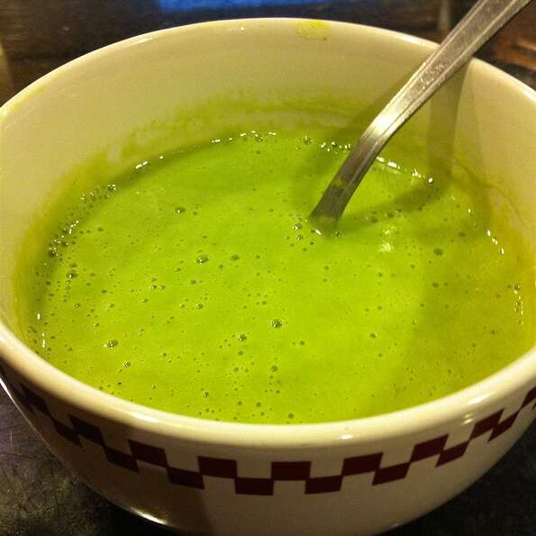

This is a healthy and simple soup I whipped up for the Vitamix®. Can easily be made vegetarian or vegan by substituting vegetable broth and/or non-dairy milk.
You can reserve some of the microwaved broccoli and potatoes and add them after blending if you like more substance to your soup. Enjoy!
Mmmmh... Green Goo!